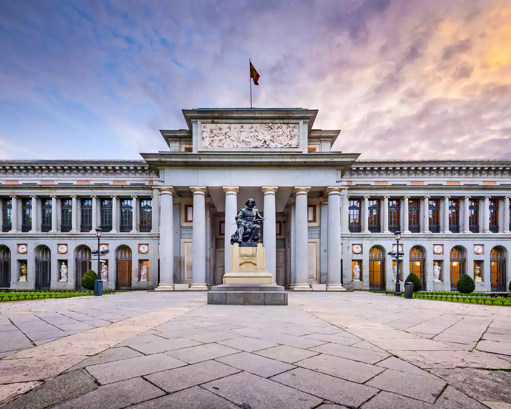
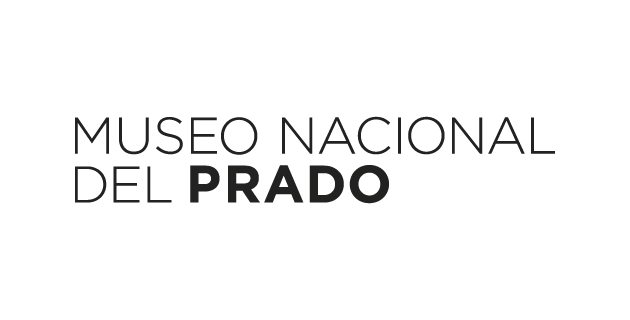

Práctica 1.1
Lydia Garrido Muñoz
Ejercicio para practicar con cada uno de los elementos HTML vistos en clase
Ir a los enlaces de interés
Museo El Prado
El Museo y sus espacios pueden convertirse en un escenario extraordinario para la danza, la música, el teatro o las acciones performativas.
Permiten contextualizar y completar la percepción de las colecciones apelando a los sentidos y a otros ámbitos del conocimiento.
Así, el Museo se transforma en un espacio cultural en el que todos los públicos pueden disfrutar de una programación complementaria a nuestras propuestas expositivas.


Sobre El Museo Nacional del Prado:
El Museo Nacional del Prado está localizado en Madrid, España,
y es considerado uno de los museos pictóricos más importantes del mundo,
pues en su interior alberga amplias colecciones de pintura ilustrativas de la historia europea
entre la Edad Media y principios del siglo XX, con especial énfasis en España.
Algunos de los artistas más reconocidos:
- El Bosco
- El Greco
- Goya
Exposiciones actualmente:
- Arte y mito. Los dioses del Prado
- De gira por España
- Velázquez y el Siglo de Oro
- La última comunión de San José de Calasanz
- Velázquez y el Siglo de Oro
- Antonia María Esquivel(1806-1857): Pinturas religiosas
- Teléfono:
- +34 913 30 28 00
- Dirección:
- Calle Ruiz de Alarcón 23
28014
Madrid
- Twitter
-
@museodelprado
- Quejas y sugerencias
-
Sede electrónica. Ministerio de Educación, Cultura y Deporte
- Otras solicitudes, escritos y comunicaciones
-
Sede electrónica. Ministerio de Educación, Cultura y Deporte
¡Ven a visitarnos!
Enlaces de interés:
Pagina de la URJC
Aula virtual de la URJC
Ir al inicio de la pág